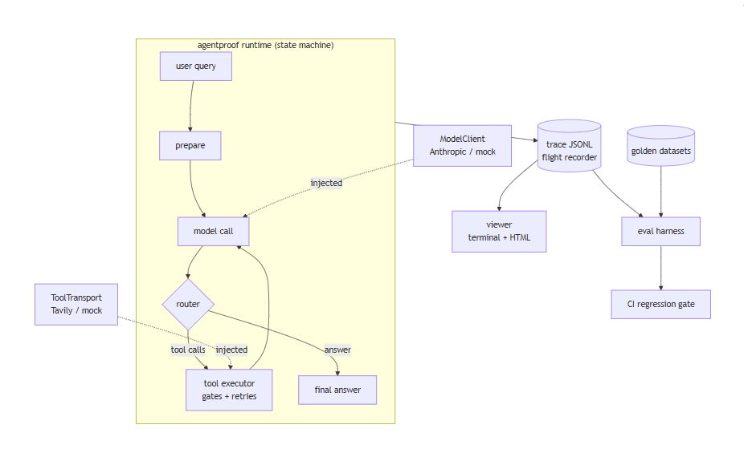
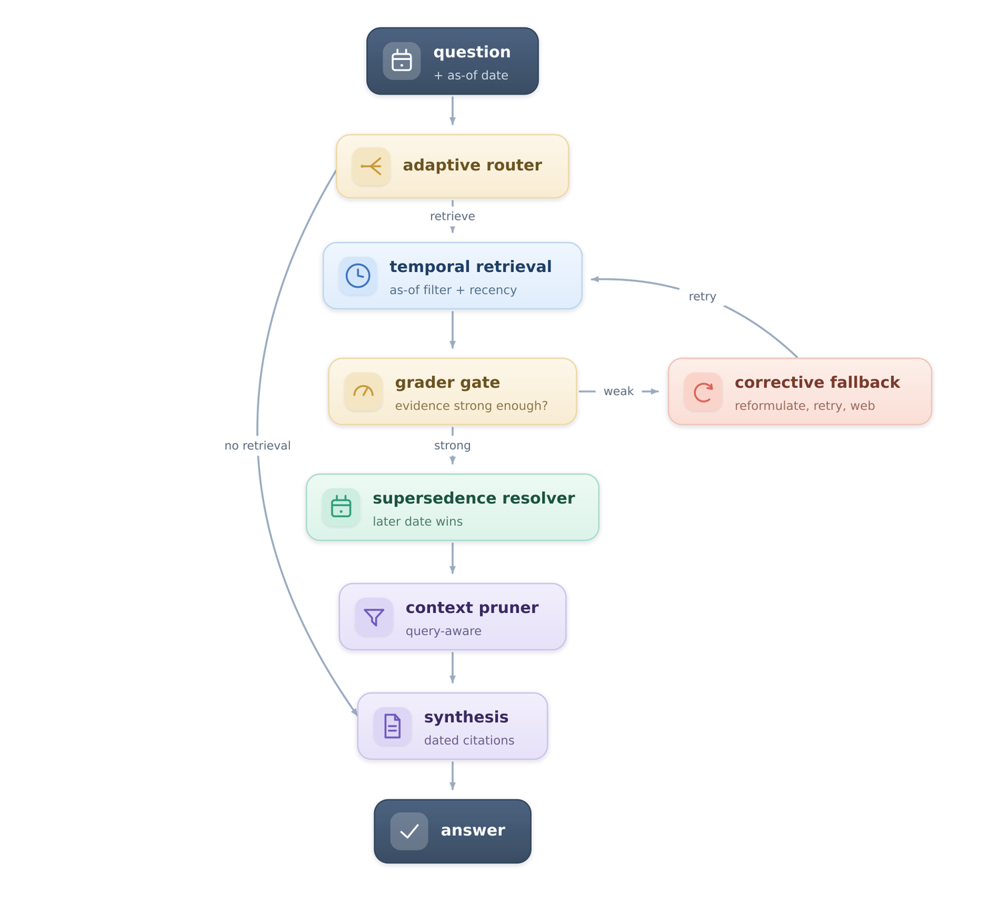
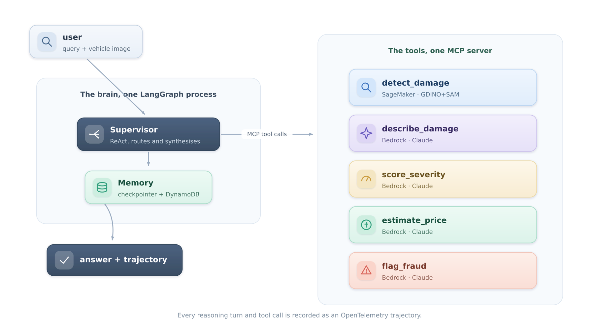
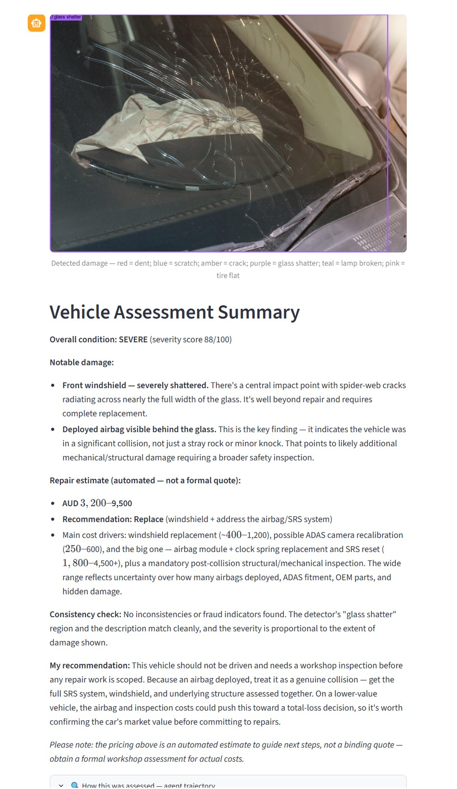
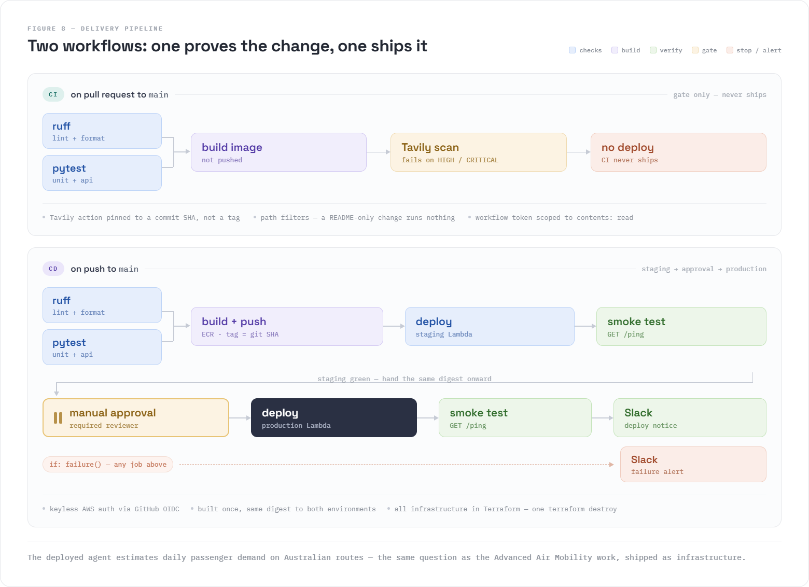

01
Clever Prompts Are Cheap Now. Reliable LLM Prompting Systems Are the Skill.
The ideas behind dependable AI prompting, laid out before building anything.
Research Fellow, RMIT University·Melbourne, Australia
An applied AI researcher and engineer who ships systems designed to prove their own reliability, from peer-reviewed vision-language models to production multi-agent architectures.
I build the geospatial and agentic core of RMIT's Advanced Air Mobility analytics programme. Before that, an industry-embedded PhD with Carsales.com Ltd, where the vision-language system I designed went into production.
What I'm building
01 Computer vision
PhD × Carsales.com Ltd
CarDNet→GroundingCarDD→CarDVLM
+ CarDamageEval
Shipped to production
02 Data science
Research Fellow @ RMIT
Large-scale mobility&geospatial analytics on AWS
PySpark · Apache Sedona
In production
03 Agentic AI
Build-in-public series
PromptProof→AgentProof→GroundProof
+ AssessAuto · CICDAgent
Shipped · more coming
Where I'm headed
Agentic systems that see and reason over data. Vision-language agents that inspect, verify, and act. Multi-agent workflows that orchestrate data pipelines, ground every claim in evidence, and prove their own behaviour through recorded, evaluated trajectories.
Live now — current work
I develop the geospatial core of RMIT's Advanced Air Mobility analytics project — origin–destination models and mobility flow analysis across Australian regional geographies, built with PySpark and Apache Sedona over large-scale spatiotemporal datasets, running on EC2, EMR, Athena and SageMaker. I'm now designing a multi-agent orchestration architecture over that workflow with LangChain, LangGraph and the Claude Agent SDK, decomposing it into specialised agents for data ingestion, distributed OD extraction and demand estimation, and extending it to a delivery layer for visualisation, freight analysis and reporting under quality gates and human-in-the-loop checkpoints.
Three of the tools built on that pipeline are public and running right now. They're embedded below — not screenshots. Try them.
Loads the live Streamlit app in place. It may take a few seconds to wake.
Waking the app…
This is taking longer than usual — the app may be cold-starting, or this browser may be blocking the embed. Use the direct link below.
If the embed stays blank, the host is blocking framing — open it directly.
Open full app ↗Loads the live Streamlit app in place. It may take a few seconds to wake.
Waking the app…
This is taking longer than usual — the app may be cold-starting, or this browser may be blocking the embed. Use the direct link below.
If the embed stays blank, the host is blocking framing — open it directly.
Open full app ↗Loads the live Streamlit app in place. It may take a few seconds to wake.
Waking the app…
This is taking longer than usual — the app may be cold-starting, or this browser may be blocking the embed. Use the direct link below.
If the embed stays blank, the host is blocking framing — open it directly.
Open full app ↗Selected work
Three agentic systems, then the vision-language research they grew out of. All four share one discipline: build the system, then build the thing that proves the system works.
Case study 01 — Agentic engineering
Building an agent is cheap now. Proving it works is the skill.
An LLM system is easy to demo and hard to trust. Three projects, each documented publicly as it shipped, take that problem one layer at a time: first make a single output verifiable, then make a self-directing agent measurable, then take the runtime that came out of it and point it at a harder problem to see whether it holds.
Each stage builds on the last one's runtime. The third stage is graded by the harness the second stage produced — which is the actual claim being made here, that the evaluation machinery generalises rather than being written to flatter one demo.
01 · Stage one
Can I trust this output?
A self-correcting prompting engine that verifies information rather than assuming it. The demonstration task is a grounded claim checker: paste a paragraph, and the engine decomposes it into atomic claims, checks each against live web evidence, and returns Supported / Refuted / Unverifiable with a citation.
A RunTrace records every step, attempt, retry reason,
token count and timing. The model client and the search transport
are both injectable, so the whole engine runs against mocks for
offline development.
The four mechanisms above come out of a structured study document in the Agentic-AI repo covering system and user prompts, role-based prompting, chain of thought, ReAct, prompt chaining, gate checks and feedback loops. It's the groundwork this stage was built from, not a separate project.
02 · Stage two
Can I trust a system that picks its own path?
A from-scratch agent runtime — no LangGraph, no CrewAI — at roughly 1,500 lines of readable Python, written specifically to expose the mechanics of an agent loop and prove they work rather than hide them behind a framework.
90+ tests and the CI eval gate run fully mocked: no API keys, no network, no excuses for not verifying behaviour. Live model and live search are injected through the same interfaces the mocks implement.
| PromptProof | AgentProof | |
|---|---|---|
| Core question | Can I trust this output? | Can I trust a system that picks its own path? |
| Control flow | Fixed prompt chain, decided at design time | State machine and router, decided at runtime |
| Observability | Linear step log (RunTrace) | Crash-safe, replayable trajectory and viewer |
| Quality enforcement | At generation time — fixes this output | At development time — a CI gate grades behaviour |
03 · Stage three
Does the runtime hold up on a harder problem?
Retrieval-augmented generation that knows when facts expire and pays only for the context it needs. It is built on the AgentProof runtime — state machine, tool airlock, flight recorder, eval harness — and graded by it, which is the clearest evidence that stage two generalises rather than being a one-off.
observed_at timestamp and every query runs "as of" a moment; conflicting facts resolve through deterministic supersedence rules where the later date wins and the older is kept as dated history, and answers must carry dated citationsThe full pipeline: adaptive router (none / one-shot / multi-hop) → temporal retrieval → retrieval grader gate, where weak evidence triggers a corrective fallback of reformulate, retry, then web search → supersedence resolver → context compressor → synthesis with mandatory dated citations. It runs fully offline by default, with no API keys and the corpus committed to the repo.


Case study 02 — Vision × agentic
One AI guesses the car damage. A multi-agent team over MCP proves it.
A single model asked to look at a damaged car and produce a price is making one unverifiable guess. AssessAuto is a multi-agent vision system that refuses to do that: every capability — detection, description, severity, price, fraud — is a separate, individually inspectable tool, so an assessment becomes a chain of typed steps you can replay rather than one opaque answer.
It is the clearest demonstration of what the agentic discipline in case study 01 buys you once the input is an image rather than text: a vision pipeline where every hop is typed, routed on demand, and recorded. The architecture has precedent in my earlier vehicle damage research; this is a clean, general-purpose rebuild of it.
detect_damage boxes the damage with a GroundingDINO + SAM detector on SageMaker; describe_damage annotates those regions and returns a typed per-region assessment; score_severity normalises it to a consistent 0–100 scale; estimate_price gives an AUD range with a repair-versus-replace call; and flag_fraud cross-checks the detector's regions against the description for inconsistencies. The last four are Claude on Amazon Bedrock.describe_damage, while a full assessment runs the whole chain
detect_damage runs on SageMaker; the four reasoning tools are Claude on Bedrock.
Case study 03 — Agentic × the AAM domain
An agent that cannot be deployed does not count.
A CI/CD pipeline whose centrepiece deploys an AWS Bedrock agent that estimates daily passenger demand on Australian routes. The choice of payload is deliberate, not incidental: it's the same demand-characterisation question as the Advanced Air Mobility work at the top of this page, shipped as production infrastructure — agentic engineering applied back onto my own research domain.
ci.yaml, on pull requests to main) — lint and test in parallel, then build plus a Trivy vulnerability scan that fails on fixable HIGH or CRITICAL findings. No deploy.cd.yaml, on merge to main) — re-runs lint and test, builds a git-SHA-tagged image, pushes to ECR, deploys to staging with a smoke test, pauses for manual approval, deploys to production with a smoke test, then posts a Slack notificationterraform destroy
Case study 04 — Vision-language research
Built the model, then built the benchmark that proves it.
The through-line of an industry-embedded PhD, jointly supervised by RMIT University and Carsales.com Ltd and awarded in May 2026. The problem stayed constant — assess vehicle damage from an image, accurately enough to act on — while the method progressed from attention-based classification, through text-guided grounding, to an end-to-end vision-language model producing structured output. The last step went into production; a separate published benchmark exists to keep its claims honest.
01 · Detection
Can attention tell real damage from a reflection?
A CNN-attention car damage classification network proposing a Convolutional Attention Module: parallel channel and spatial attention sub-modules inserted after each residual block in a ResNet50 backbone. Channel attention decides what to focus on, spatial attention decides where — together they separate real damage from artefacts like reflections and shadows.
02 · Grounding
Can a description locate the damage it describes?
Text-guided multimodal phrase grounding for car damage detection, fusing visual and textual signals to localise damage precisely from natural-language descriptions, and outperforming baselines on mAP and recall. Published in IEEE Access, vol. 12, pp. 179464–179477, 27 November 2024.
03 · Production
Can it produce something a business can act on?
The PhD's flagship contribution and the system that shipped. An end-to-end vision-language model combining object detection with structured reasoning to output damage type, location and severity — evaluated on both structured accuracy and semantic quality, and reported as achieving state-of-the-art performance. It was scaled into production on AWS with Metaflow inference workflows.
04 · Evaluation
How would anyone check a claim like that?
A benchmark framework for evaluating car damage assessment with vision-language models, using a dual-layer evaluation approach that measures structured accuracy and semantic quality together. It proposes a hybrid CarDD_Score metric and validates it against a curated annotated dataset with baseline experiments. Published in the proceedings of AusDM'25, the 23rd Australasian Data Science and Machine Learning Conference.
This is the same instinct as the agentic track, arrived at from the other direction: the model and the thing that grades the model are two halves of one piece of work.
On code availability. CarDNet is fully open source. GroundingCarDD and CarDVLM are not — the implementation is industry-owned, so those are published as peer-reviewed papers and project pages rather than code. The links reflect that exactly.
Tech stack
Current tooling only. Every item below appears somewhere in the work above — nothing here is listed on the strength of having read about it.
Certifications & credentialed projects
Each credential is paired with the open-source project that demonstrates it in practice. Where that project is one of the case studies above, the link goes there rather than repeating it.
LangGraph agent orchestration, retrieval-augmented generation, human-in-the-loop workflows, multi-agent architecture and routing.
Demonstrated in → UDA-Hub
Agent workflows and orchestration patterns, tool calling, state and memory management, multi-agent routing, agentic RAG with evaluation loops.
Demonstrated in → AgentProof, case study 01
Production ML pipelines, automated retraining, drift monitoring, CI/CD, and API deployment with FastAPI, MLflow and GitHub Actions.
Demonstrated in → CICDAgent, case study 03
CRISP-DM, ML pipelines with NLP, recommendation systems, and software engineering practice for data science.
Demonstrated in → PromptProof, case study 01
Verify — Agentic AI ↗ Verify — ML DevOps & Data Scientist ↗ All certifications ↗
The proof projects, in brief
StateGraph built from scratch and no prebuilt
agent constructors. A Pydantic TicketClassification
schema drives deterministic, fully logged routing; RAG sits behind
an escalation gate so low retrieval confidence hands off to
a human rather than answering ungrounded; and memory is three-tier
— typed run state, thread checkpointing, and long-term
cross-session memory in SQLAlchemy. Modelled on a first client
account, "CultPass," and tested against nine cases covering both
resolution and escalation.
Repo ↗
llm_engineering course
materials, with the original licence notices retained.
Repo ↗
Research & publications
The credibility layer under the work above. Five first-authored publications during the PhD, including three Scimago Q1 journal papers, plus collaborative work in biomedical imaging.
Proceedings of AusDM'25 — 23rd Australasian Data Science and Machine Learning Conference
WIREs Data Mining and Knowledge Discovery, 15: e70027 Scimago Q1 · IF 11.7
Biomedical Signal Processing and Control, Vol. 112 Scimago Q1 · IF 4.9
SSPANet — combining Z-pool channel attention, strip pooling for long-range spatial context, and style pooling for fine-grained texture awareness, integrated with VGG16 and ResNet50 backbones and made explainable via GradCAM, GradCAM++ and EigenGradCAM. ResNet50 + SSPANet reports 97% accuracy, precision, recall and F1, with 95% Cohen's Kappa and Matthews Correlation Coefficient, on the Figshare Brain Tumor Dataset (3,064 T1-weighted contrast-enhanced MRI images, 233 patients, three tumour classes).
IEEE Access, vol. 12, pp. 179464–179477 Scimago Q1
Teaching & supervision
Alongside the research: supervising applied aviation projects, and teaching the analytics and infrastructure courses that feed into them.
Aviation Master's Program · RMIT University
Co-supervising a postgraduate research project applying AI methods to a real-world aviation challenge, within a joint supervisory team.
Course 2650 · RMIT University
Supervising five student research groups, around twenty students, through applied research projects addressing real-world aviation industry challenges.
RMIT University
Delivered tutorials and workshops on data preparation, visualisation and machine learning methods using Python and AI Studio, guiding students through model development, evaluation and advanced analytics topics.
RMIT University
Facilitated labs on IT infrastructure and cloud systems — Linux administration, networking and server deployment — and introduced advanced topics including virtualisation, containers, IoT and APIs.
PhD in Business Information Systems
RMIT University · awarded May 2026
An industry-embedded programme jointly supervised by RMIT and Carsales.com Ltd, advancing multimodal AI for intelligent vehicle assessment.
Industry Grant, RMIT–Carsales
Supported the development of GroundingCarDD and CarDVLM.
RACE AWS Merit Allocation Scheme
Four consecutive rounds
AWS cloud computing credits supporting large-scale data preparation, model training and multi-agent system development.
PhD HDR Certificate of Excellence
RMIT University
HDR Candidate Representative
College of Business and Law, RMIT University
Writing
Eight posts written as the agentic work shipped, in order. Each one is paired with the code it describes, so the argument and the implementation can be read against each other.
The ideas behind dependable AI prompting, laid out before building anything.
Building the self-correcting PromptProof engine.
The AgentProof runtime and its flight-recorder design.
Grading recorded agent runs across four quality dimensions with an LLM-as-judge.
The progression from a single agent up to the Claude Agent SDK.
The GroundProof writeup — stale-fact handling and context-cost efficiency in RAG. This is where the 62% figure comes from.
The AssessAuto writeup — a multi-agent system producing a condition report, repair estimate and fraud check from a single damage photo.
A retrospective on how the field's terminology has shifted over four years.
Other writing
Contact
Melbourne, Australia. Happy to talk about agentic systems, multi-agent workflows, vision-language models, or geospatial analytics at scale.